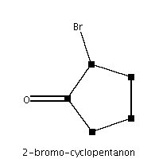
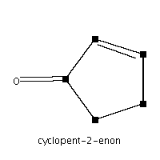
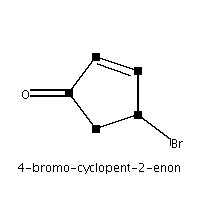
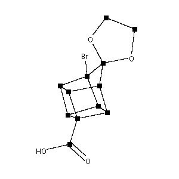
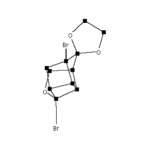
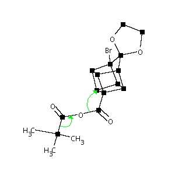
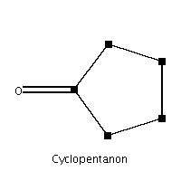
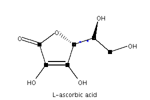
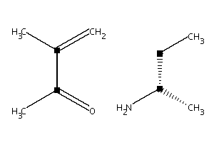

Appendix A. Summary of molecular structures
Table A-1. Summary of molecular structures
| Molecular structure | Options |
|---|---|
| structures/2,3,4-tribromo-cyclopentanon: width=200 height=200 rotate=0 |
 | structures/2-bromo-cyclopentanon: width=200 height=200 rotate=0 |
 | structures/2-cyclopentenon: width=200 height=200 rotate=0 |
 | structures/4-bromo-cyclopent-2-enon: width=200 height=200 rotate=0 |
| structures/cuban_diels-alder_cyclopentadiens: width=300 height=200 rotate=270 |
 | structures/cuban_favorski: width=300 height=300 rotate=270 |
| structures/cuban_favorski_decarboxylation: width=200 height=200 rotate=270 |
 | structures/cuban_first_four_ring: width=300 height=300 rotate=270 |
 | structures/cuban_halogenisation: width=300 height=300 rotate=270 arrows=18,20,l,18,16;16,5,r,3 |
| structures/cuban_hydrolysis: width=300 height=200 rotate=270 |
| structures/cuban_ketalisation: width=400 height=300 rotate=270 arrows=3,4,r,10;9,10,r,4 |
| structures/cuban_two_cyclopentadiens: width=300 height=200 rotate=270 arrows=8,9,l,4;4,3,l,2,3;1,2,r,8 |
 | structures/cyclopentanon: width=200 height=200 rotate=0 |
| structures/exo_norcamphan: width=300 height=200 rotate=270 | |
| structures/exo_norcamphan_norbonyl_cation: width=300 height=250 rotate=270 conjRing=2,3,4,c+ | |
 | structures/l_ascorbic_acid: width=300 height=200 rotate=270 labels=9=*;1=* |
| structures/l_ascorbic_acid_numbers: width=300 height=200 shownumbers rotate=270 labels=9=*;1=* | |
| structures/pyridin_hantzsch: width=300 height=250 rotate=270 hideEndCarbon orthoLines=2,r,sr1a,4;1,l,sr2,3;3,l,sr1b,5;4,r,sr3,6 labels=10=keto2;11=ester2;7=aldehyd;8=ester1;9=keto1 |
 | structures/pyridin_hantzsch_michael_addition: width=300 height=200 rotate=270 |
| structures/pyridin_kroehnke: width=300 height=200 rotate=270 hideEndCarbon orthoLines=1,l,sr2,6;5,r,sr2,6;2,r,sr1,3 labels=8=hal-keton;7=ab-keton;9=keton | |
| structures/pyridin_kroehnke_arom: width=300 height=270 rotate=270 hideEndCarbon arrows=3,16,l,3,4;4,5,r,5,6;1,6,r,1,2;7,2,r,7 labels=13=ab-keton;14=hal-keton;15=keton |